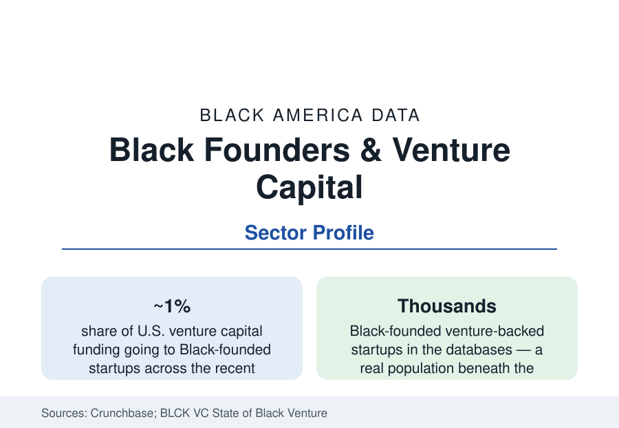

Black Business
Black Tech Founders: Startups, Venture Capital, and the One-Percent File
Black founders receive roughly one percent of U.S. venture capital — the startup economy's most quoted and most contested statistic. The funding data.

One statistic organizes the Black technology-business file: across the Crunchbase and PitchBook series of the past decade, startups with Black founders have received roughly one percent — in the strongest recent years approaching two, in the weakest under one — of the hundreds of billions in annual U.S. venture capital. Around that number sits a real and growing founder population, a new layer of Black-led funds, and a decade of argument about what the number means. This article reports the startup data.
The Funding Series and Its Shape
The series' contours matter more than its headline. Black-founded companies raise at every stage at rates below their share of founders (who themselves form a small single-digit share of the venture-backed founder pool): the seed stage shows the best relative access — the accelerator era (Techstars, Y Combinator's published cohorts record Black founders in the low single digits of batches) democratized the first check — and the gradient steepens by stage, so that growth-stage Black-led rounds are rare enough to be individually tracked by the trade press. The geography is concentrated (the Bay Area, New York, Atlanta — the 'Black tech capital' claimant on the strength of its HBCU-and-corporate founder base — Los Angeles, and Austin lead the counts) and the sector map follows the general venture market's (software, fintech, health tech, consumer). The women-founders intersection is the file's extreme cell: Black women founders' share of total venture funding rounds to a few tenths of a percent in the ProjectDiane series, against their business-formation rates at the top of the entrepreneurship profile.
The Counterweights: Funds, Exits, and Bootstraps
Three counter-developments structure the current data. The first is the Black-led fund layer: from the pioneering firms to the post-2020 fund wave, Black general partners now run funds from pre-seed specialists to nine-figure vehicles — still a low-single-digit share of venture firms and assets in the BLCK VC counts, but the allocator layer the system lacked a decade ago, deploying into the founder pool the mainstream data underserve. The second is the exit record: Black-founded companies have produced genuine venture-scale outcomes (public listings, nine- and ten-figure acquisitions, decacorn valuations in the strongest cases) — few enough to enumerate, real enough to retire the pipeline excuse in the trade literature's own terms. The third is the non-venture majority: the Census ABS technology sector counts Black-owned software, IT-services, and tech-consulting firms in the tens of thousands, most bootstrapped or debt-financed, serving the government and enterprise markets of the technology-workers profile — a business population an order of magnitude larger than the venture-backed set that monopolizes the category's attention.
The Corporate and Public Channels
The startup file's supply side runs through the institutions the other sections profile: the HBCUs' entrepreneurship centers and the Atlanta University Center's tech build-out, the corporate innovation programs of the Black-metro employers, the federal SBIR/STTR grant system (whose awardee demographics the agencies publish — Black-led firms in the low single digits of awards), and the supplier-diversity channel (minority-tech firms' share of corporate and government IT spend, tracked by the NMSDC data). The talent loop closes the system: the technology workforce profile's underrepresentation is the founder pool's upstream constraint, and the founders' own hiring (Black-founded firms employ disproportionately Black workforces in the survey data) is the downstream effect the ecosystem argument prices.
The Post-2020 Arc
The funding series has a marked recent shape: the 2020–21 commitments era (corporate and LP pledges, fund launches, the percentage's peak years) followed by the 2022–24 venture contraction, in which Black founders' funding fell faster than the market's — the percentage giving back most of its gains in the Crunchbase series — and by the legal challenges to race-conscious programs (the Fearless Fund litigation and settlement) that redesigned the support layer's instruments. The reference reports the arc as the data stand: a founder population that kept forming through the cycle, a funding share that proved pro-cyclical, and an allocator layer whose survival through the contraction is the file's current test.
Reading the Startup Data
The one-percent figure is both a measurement and an indictment the industry debates; the population beneath it — tens of thousands of Black tech businesses, a credentialled founder class, funds of their own — is the business section's youngest sector and its most leveraged bet: the first Black business arena native to the economy's commanding heights. Whether the percentage is a floor being built on or a ceiling being re-imposed is the question the next editions of the series will answer.
More in Black Business
Black-Owned Businesses: Counts, Receipts, and the Representation Gap
About 161,000 Black-owned employer firms and three million solo ventures: how the Census Bureau counts Black business ownership, where firms concentrate, and the gap between population share and business share.
Black Median Net Worth: The Wealth Gap in Federal Reserve Data
The Federal Reserve puts Black median family net worth at $44,900, against $285,000 for White families — about 16 cents on the dollar. The widest gap in economic data.
Black Buying Power: The $1.8 Trillion Consumer Economy
Black buying power is estimated at about $1.8 trillion — larger than the economy of most nations. What the figure measures, who produces it, and what it buys.
Source: Crunchbase and PitchBook venture data; State of Black Venture report (BLCK VC); Black Tech Street and founder-outcome research; Census Bureau Annual Business Survey technology sector.